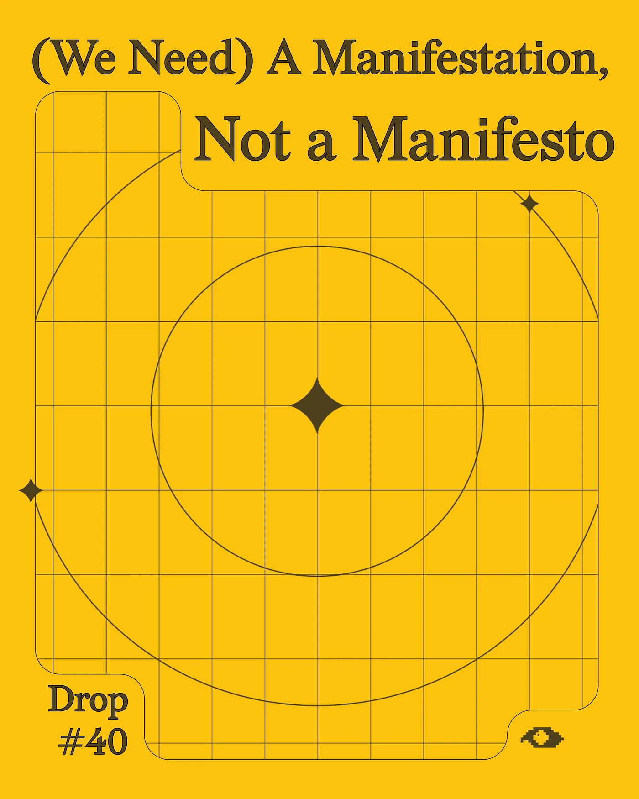
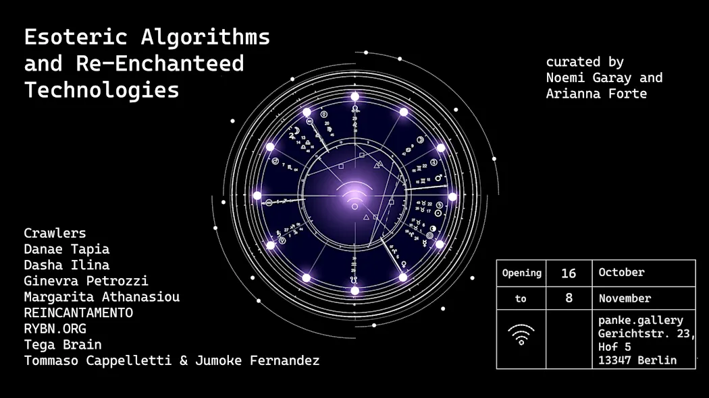
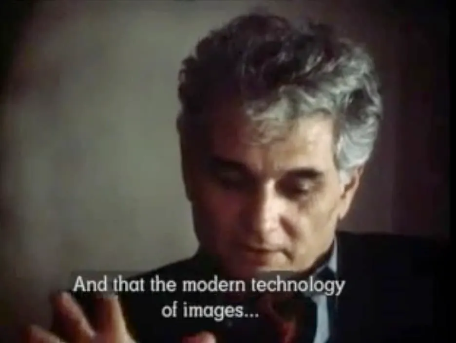
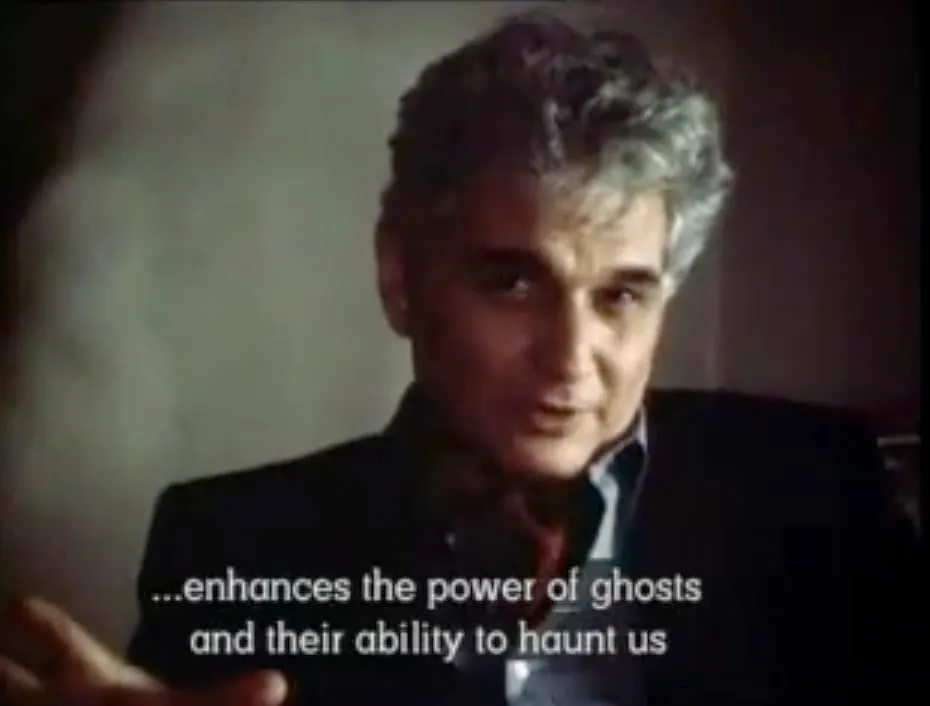
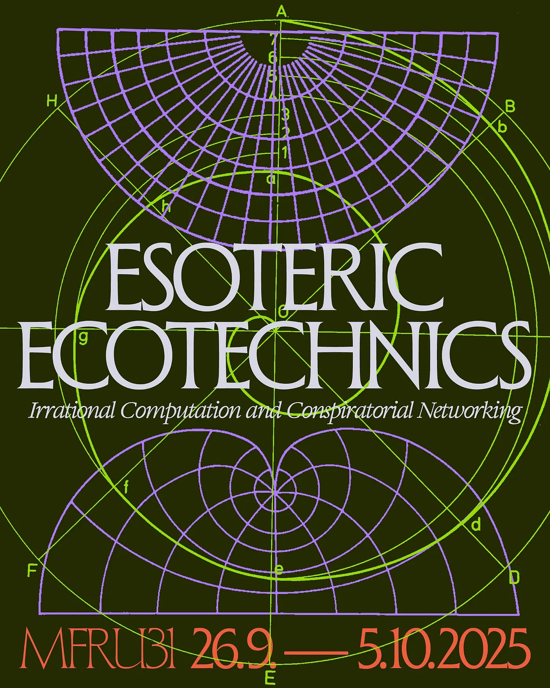
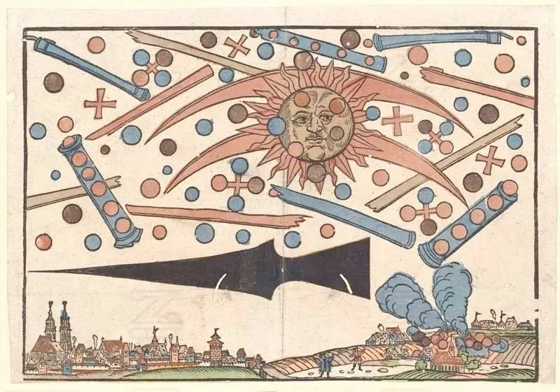
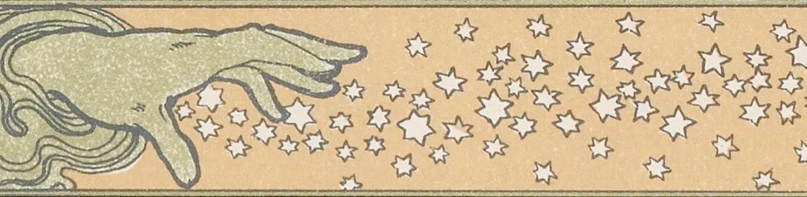
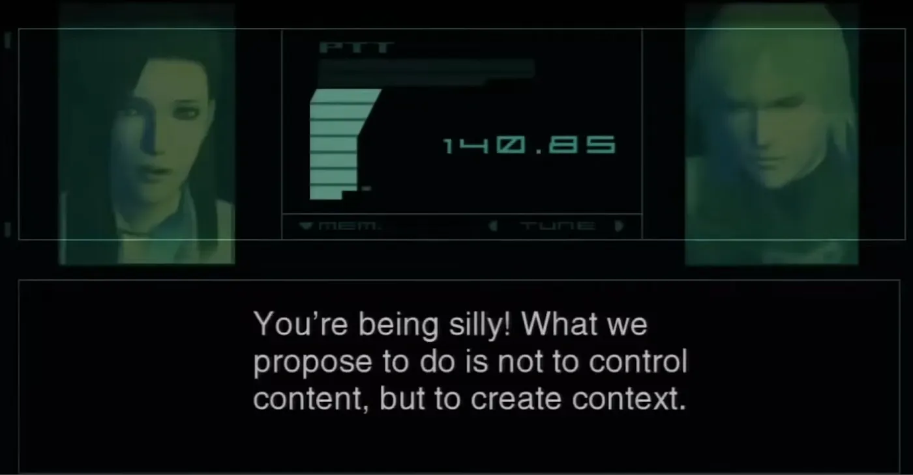

Introducing 'Arcane Affinities'
Drop #40 · November 11, 2025 · 12 min read
Hey everyone (▰˘◡˘▰)
We’re happy to share the opening essay from our latest publication, Arcane Affinities, written collectively by REINCANTAMENTO squad and published here in full.
This text sets the stage for the entire project, tracing a path from Weber’s disenchantment thesis toward the horizons we’re moving to as a collective: Mediterranean networks, improper names, and infrastructure for collective transformation.
Arcane Affinities, a double-catalogue bridging two exhibitions - Esoteric Algorithms and Re-Enchanted Technologies at Panke Gallery (Berlin) and Esoteric Ecotechnics at MFRU/IFCA (Maribor).
Mapping the edges of hermetic practices, Arcane Affinities gathers artworks, essays, and experimental methods exploring how esoteric thinking can restore agency within computational systems. With Arcane Affinities, REINCANTAMENTO acts as a network channel: the node of a conspiracy interwoven toghether with curators Arianna Forte, Noemi Garay, Lara Mejač, and Davide Bevilacqua to bring together a transnational constellation of practitioners.
The catalogue is co-published with servus.at, the legendary Linz-based platform for net culture and critical digital practice. The graphic design and artistic direction by our favourite visual wizard Giorgio Craparo.
We still have physical copies available - if you’re interested, contact us via email or any social platform!
Arcane Affinities contains contributions by Tega Brain, Danae Tapia, RYBN.ORG (b01, Julien Deswaef, Brendan Howell, Martin Howse, Nicolas Montgermont, Horia Cosmin Samoila, Antoine Schmitt, Marc Swynghedauw, Suzanne Treister), Margarita Athanasiou, Ginevra Petrozzi, Dasha Ilina, The Crawlers, Tommaso Cappelletti & Jumoke Fernandez, Federico Poni, Chara Prodi, Anna Kraher, Lucile Olympe Haute & The Institute of Diagram Studies, Ioana Vreme Moser, Staš Vrenko, and Technologie und das Unheimliche (T+U).

(We Need) A Manifestation, Not a Manifesto
To perceive is to recognize that which alone has value, that which alone truly exists.
And what else truly exists in this world if not that which is not of this world?
- Cristina Campo
This question, an echo from the mysterious Italian poet Cristina Campo, opens the ground for the publication you hold in your hands.
Titled Arcane Affinities, it exists somewhere between a magazine and an intra-catalogue, centered around two exhibitions: Esoteric Algorithms and Re-Enchanted Technologies at panke.gallery in Berlin, and the 31st International Festival of Computer Art (MFRU31) in Maribor, titled Esoteric Ecotechnics: Irrational Computation and Conspiratorial Networking.
Both exhibitions claim, through their very titles, a common semantic territory: enchantment, magic, esotericism, irrationality, and conspiracy. More than a decorative language, a methodological stance: a way of engaging with and intervening in the computational systems that structure our collective life.
For the uninitiated reader, this juxtaposition might seem absurd, even contradictory. Isn’t computation the ultimate expression of rationality? The triumph of Boolean logic, reality reduced to zeros and ones, and the world made legible to algorithmic calculation? It represents the culmination of what Max Weber called the disenchantment of the world (Entzauberung der Welt): the affirmation of utilitarian, rationalized thinking and the dismissal of non-quantitative and magical approaches.

Modernization and its totems - the factory, electricity, market logics - engineered a systematic forgetting. First in Europe, then progressively worldwide through colonialism’s violent apparatuses, countless myths, folk stories, transmundane entities, and alternative forms of life (Lebensformen) were erased from collective memory. Like the Pagans under Christianity’s advance, these ritualistic practices and their communities were forced to the margins, surviving in peripheral spaces like the Southern Italian countryside or eliminated to clear ground for capitalism’s expanding cathedral, following the genocidal logic established during the conquest of the Americas.
But disenchantment is only part of the story. Jacques Derrida understood this as early as 1983, speaking in the experimental film Ghost Dance:
And I believe that modern developments in technology and telecommunication, instead of diminishing the realm of ghosts, as does any scientific or technical thought, of leaving behind the age of ghosts as part of the feudal age… I believe that ghosts are part of the future. And that the modern technology of images like cinematography and telecommunications enhances the power of ghosts and their ability to haunt us.


This intuition, expanded by Erik Davis in his 1990s classic TechGnosis, identifies an inescapable pattern: every media mutation - radio, cinema, television, internet, social networks, generative AI - produces haunting returns equal to its rational promises. Far from banishing the supernatural, new technologies spawn fresh icons and forms of lore, new spiritual affordances, uncovering pathways to the otherworldly. This mythological apparatus transcends a purely functional understanding of technical apparatuses. Weber’s disenchantment thesis, then, was never completed—technology itself became the site of re-enchantment.
It is through this techno-gnostic perspective that the constellation gathered here positions its practice. Cyber witches, algorithmic shamans, financial alchemists scattered across Europe: a microcosm of practitioners. They infiltrate automated financial systems, catalog TikTok’s bestiary of platform worshippers, decode corporate iconography, and orchestrate micro-rituals against binary thinking - to name just a few of the practices collected in this publication.

Arcane Affinities is organized into two main sections.
The first one is dedicated to Esoteric Algorithms and Re-Enchanted Technologies. It opens with Arianna Forte and Noemi Garay Murcia’s nurturing curatorial text, setting the tone for contributions by Crawlers, Danae Tapia, Dasha Lina, Ginevra Petrozzi, Margarita Athanasiou, RYBN.Org, Tega Brain, and Tommaso Cappelletti + Jumoke Fernandez.
The second one explores the 31st International Festival of Computer Art in Maribor, Slovenia, conceptually framed as Esoteric Ecotechnics: Irrational Computation and Conspiratorial Networking by curators Davide Bevilacqua and Lara Mejač. Their curatorial text introduces this section, while the artists’ contributions take a different form, offering glimpses into their creative processes through responses to the curatorial team’s provocations and questions. Featured artists include S()fia Braga, Staš Vrenko, Ginevra Petrozzi, Federico Poni, Ioana Vreme Moser, Lucile Olympe Haute & The Institute of Diagram Studies, Technologie und das Unheimliche, Pedro del Real Lavergne, and our collective, REINCANTAMENTO.
The co-publisher of Arcane Affinities is servus.at, a non-profit net culture initiative based in Linz, Austria. Operating as a network of networks and infrastructures centered on critical media art practices, servus.at joins forces with MFRU and panke.gallery to form a constellation of practices and esoteric intentions. Rather than a declaration of acquired associations, Arcane Affinities shall become a starting point for new alliances among those who recognize each other.
The material contained here is magmatic; it overflows and stretches the limits of the catalogue form, pushing to include artworks, essays, and practices in various forms.
The turn to esoteric methodologies is not arbitrary: it has intensified in direct proportion to the erosion of our political and technical agency over the systems that now govern every dimension of our lives.
The breaking point came when the owners of such systems decided to deploy them, openly and without apology, in service of fascism’s return. The disturbing spectacle of Trump II’s inauguration in Washington, DC, and the pictures of Gaza in ruins, carrying the unmistakable density of History in motion, made it clear: we had already lost. We are trapped within infrastructures we cannot control, excluded from every meaningful site of decision-making. Worse: we have become targets of these very systems, precisely as our more marginalized comrades warned we would.
As “a kind of collective apprehension of the apocalypse” becomes our ambient condition, the search for counter-practices takes on desperate urgency.

We need technologies - technical, social, and spiritual - to restore agency and interrupt what otherwise appears to be an inexorable trajectory.
In the forgotten ruins of the past, we find dark precursors. The Gnostics, working from the undercommons of late antiquity, faced analogous conditions of exclusion. Barred from temples and palaces, denied access to legitimate structures of authority and knowledge, they developed hermetic practices and conspiratorial networks that could function parasitically. In Federico Campagna’s words from his latest book:
The Gnostic communities gathered like a rebel network of cosmic migrants. They did not want to build a permanent home on Earth, but to sabotage the world [...]. Anyone who wished to join them, rich or poor, freeborn or slave, was welcomed into the secrets of their knowledge. Women were especially welcome. What was forbidden to them by other cults was allowed and encouraged among the Gnostics; many of their priests, teachers and prophets were women [...] But they did not take any of that too seriously. They had to use the imperfect language of the world, since ‘truth did not come into the world naked, but in symbols and images. The world cannot receive truth in any other way’. Yet, they knew that worldly identities, hierarchies and social conventions were just part of God’s evil plan to keep people enslaved to their ignorance.
A warning, however. The Gnostics practiced a form of dissociative spirituality. They sought departure from the material world, which they deemed unimportant. Their occult and conspiratorial practices provided agency, yes, but agency oriented toward spiritual exodus rather than material transformation.
Their ambiguous heritage has mutated and metastasized. Today, it animates Silicon Valley’s overlords: ketamine-fueled visions of Martian escape, long-termist fantasies that sacrifice present lives for hypothetical futures, and gods made of matrix multiplications.
The struggle against techno-fascism is therefore also spiritual and cosmological: a fight over what counts as real, what deserves our care, and which worlds are worth building. We, as REINCANTAMENTO, want to salvage the Gnostic conspiratorial methods while rejecting their dissociative goals. We need spiritual technologies that are associative, not escapist. Practices that work on both the plane of meaning and the plane of matter.
Hijacked Vehicles and Improper Names
Magic exists in most societies in one way or another, and one of the forms it exists in a lot of places is, if you know a thing’s true name, you have power over the thing, or the person. And of course it’s irresistible because I’m a writer. I use words, and knowing the names of things is – I do magic, I do make up things that didn’t exist before by naming them.
- Ursula K. Le Guin
It is not enough to say things. The magicians and the Kabbalists understood this well: language must act upon reality to transform it. Our world already functions this way: saying “I do” at the right moment during a wedding ceremony alters one’s social and relational condition, just as declaring oneself guilty during a criminal trial does. What we need is a manifestation, not a manifesto.

Yet language’s pragmatic dimension reverberates only within a specific context. Social infrastructure, more than ideas, determines what we think, how we think, and how we act. Ideas are always embodied, circulating within social ecosystems rather than existing as abstractions. We think and act together. This conviction - at once scientific and spiritual - drives our goal: building social affordances for new worlds.
See for yourself: the vibe shifted, and chaos is everywhere. Let that be our new start. We said it before:
Democracy as voice: juvenile fantasy. Luckily, reality is broken, discussion is impossible, and we are finally allowed to go insane.
But chaos can be the enemy of agency. The collapse of consensus reality often leads to paralysis. Institutions are crumbling and empires are collapsing: don’t let them crush you as they fall. Agency starts when the dust settles. The seizure of the US American state power moved at a frenetic pace for a reason: to overwhelm an already exhausted public with relentless, escalating shocks.
Building requires order, and if none exists, we must ordain our own. Organizing begins with commitment: a shared conviction that transformation is possible, even when conditions suggest otherwise. Cultivate it over time with action. The goal is to build structures robust enough to outlast any individual’s participation, adaptive enough to survive changing conditions.
Our reconquest of agency will not happen within the boundaries imposed on us by Modernity. Agency, today, is unthinkable; therefore, it must be experienced. The plan is then to hijack different vehicles and steer their trajectory to our common advantage. One of such vehicles is the socio-semiotic space we call the art world.
We want to utilize its interstice - spaces, networks, and occasional funding - to contribute to laying the ground for social spaces of collective transformation. Bini Adamczak’s Beziehungsweise Revolution centers the revolutionary work on transforming the way we relate to each other. She plays with the German term “beziehungsweise“ which means both “respectively” and “in terms of relationships,” suggesting that real change happens following the reshaping of social bonds.
Artistic agency is neither located in the artist nor the artwork alone. Art exists in the encounter rather than the object, and agency emerges in the relational space between people gathered around a shared practice. What matters is whether practice generates new patterns of relation. If you like what we say and make, come and talk to us. Do you see people who enjoy what you enjoy? Join them.
With this publication, REINCANTAMENTO became the channel (or the container or the net bag, to borrow a term from our friend JPGS) through which two exhibitions, two concepts, two communities came together. REINCANTAMENTO as a group operates as an improper name, borrowing from the tradition of shared pseudonyms used in historical conspiracies. An improper name does not designate a fixed subject with stable identity. Instead, it marks a space of affinity, a pattern that different practitioners can temporarily inhabit and extend.
A space that we are progressively grounding into our context, as a collective with Italian roots, believing that alternative metaphysics might emerge from the imaginative space of the Mediterranean - what Lebanese-American poet Etel Adnan describes as “the many Mediterraneans: the geographical, the historical, the philosophical... the personal, the one we swim, and we have swum in.”

This publication documents one moment in an ongoing process, with the practitioners gathered here representing a constellation of mutual methods and overlapping territories. Riffing on André Breton: “one publishes to find comrades”. We found some, but it’s just the beginning: there is room for many swimmers in these waters.
REINCANTAMENTO,
Berlin 4 October 2025